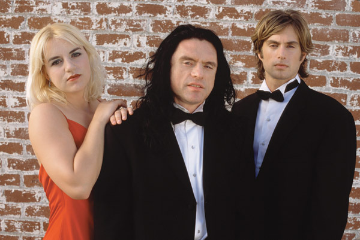

The Room is a 2003 American independent drama film written, directed, produced by and starring Tommy Wiseau, and co-starring Greg Sestero and Juliette Danielle. The film centers on a melodramatic love triangle between amiable banker Johnny (Wiseau), his deceptive fiancée Lisa (Danielle) and his conflicted best friend Mark (Sestero). A significant portion of the film is dedicated to a series of unrelated subplots, most of which involve at least one supporting character and are left unresolved due to the film's inconsistent narrative structure. According to Wiseau, the title alludes to the potential of a room to be the site of both good and bad events;[4] the stage play from which the screenplay is derived takes place in a single room.[5]
A number of publications have labeled The Room one of the worst films ever made. Ross Morin, an assistant professor of film studies at Connecticut College in New London, CT, described The Room as "the Citizen Kane of bad movies".[3] Originally shown only in a limited number of California theaters, The Room quickly became a cult film due to its bizarre and unconventional storytelling, technical and narrative flaws, and Wiseau's off-kilter performance. Although Wiseau has retrospectively described the film as a black comedy, audiences have generally viewed it as a poorly-made drama, an opinion shared by some of the cast.
The Disaster Artist, Sestero's memoir of the making of The Room, was co-written with Tom Bissell and published in 2013. A film of the same namebased on the book, directed by and starring James Franco, was released on December 1, 2017; both the book and film received widespread acclaim and numerous award nominations. The Room also inspired an unofficial video game adaptation, The Room Tribute, released on Newgrounds in 2010.
Plot
Johnny is a successful banker who lives in a San Francisco townhouse with Lisa, his future wife. Lisa, having become dissatisfied with her life and Johnny, seduces his best friend Mark and the two begin an affair. As the wedding approaches and Johnny's influence at his bank slips, Lisa alternates between glorifying and vilifying Johnny to her family and friends, making false accusations of domestic abuse and defending Johnny against criticisms. Meanwhile, Johnny, having overheard Lisa confess her infidelity to her mother, attaches a tape recorder to their phone in an attempt to identify her lover.
Denny, a neighboring student whom Johnny financially and emotionally supports, has a run-in with an armed drug dealer, Chris-R, whom Johnny and Mark overpower and take into custody. Denny also lusts after Lisa, and confesses this to Johnny. Johnny spirals into a mental haze and calls upon Peter, his and Mark's psychologist friend. Peter alternates between defending Lisa and assessing her as a sociopath, which results in Mark, feeling guilty about his and Lisa's affair, briefly trying to murder him.
At a surprise birthday party for Johnny, one of his friends catches Lisa kissing Mark while the other guests are outside and confronts her about the affair. Johnny announces that he and Lisa are expecting a child, only for Lisa to tell the guests that she lied about it. At the end of the evening, Lisa flaunts her affair in front of Johnny, who attacks Mark.
After the party, Johnny locks himself in the bathroom in despair. When he leaves, he retrieves the cassette recorder that he attached to the phone and listens to an intimate call between Lisa and Mark. Outraged, Johnny berates Lisa for betraying him, prompting her to end their relationship and live with Mark. Johnny has an emotional breakdown, destroying his apartment and committing suicide via gunshot. Hearing the commotion, Denny, Mark, and Lisa rush up the stairs to find his body. Mark blames Lisa for Johnny's death, admonishes her for her deceitful behavior, and tells her to get out of his life. Denny asks Lisa and Mark to leave him with Johnny, but they stay and comfort each other as the police arrive.

Characters
Tommy Wiseau as Johnny, a successful banker who is engaged to Lisa
Greg Sestero as Mark, Johnny's best friend, who is having an affair with Lisa
Juliette Danielle as Lisa, Johnny's sociopathic fiancée, who engages in an affair with Mark
Philip Haldiman as Denny, a young neighbor whom Johnny treats as a son
Carolyn Minnott as Claudette, Lisa's mother
Robyn Paris as Michelle, Lisa's best friend
Scott Holmes as Mike, Michelle's boyfriend
Dan Janjigian as Chris-R, a drug dealer who threatens Denny
Kyle Vogt as Peter, a psychologist and friend of Mark and Johnny
Greg Ellery as Steven, a friend of Johnny and Lisa

Critical Reception
The Room premiered on June 27, 2003 at the Laemmle Fairfax and Fallbrook theaters in Los Angeles. Wiseau additionally arranged a screening for the cast and the press at one of the venues, renting a spotlight to sit in front of the theater and arriving in a limousine.[3] Ticket buyers were given a free copy of the film's soundtrack on CD. Actress Robyn Paris described the audience laughing at the film, and Variety reporter Scott Foundas, who was also in attendance, would later write that the film prompted "most of its viewers to ask for their money back — before even 30 minutes [had] passed."[3] IFC.com described Wiseau's speaking voice in the film as "Borat trying to do an impression of Christopher Walken playing a mental patient."[50] The Guardian described the film as a mix of "Tennessee Williams, Ed Wood, R. Kelly's Trapped in the Closet".[51]
The Room has received negative reviews for its acting, screenplay, dialogue, production values, score, direction, and cinematography. The film is described as one of the worst films ever made by several publications.[52][53] On review aggregator Rotten Tomatoes, the film has an approval rating of 26% based on 27 reviews, with an average rating of 2.9/10. The site's critical consensus reads, "A bona-fide classic of midnight cinema, Tommy Wiseau's misguided masterpiece subverts the rules of filmmaking with a boundless enthusiasm that renders such mundanities as acting, screenwriting, and cinematography utterly irrelevant. You will never see a football the same way again."[54] On Metacritic, which assigns a normalized rating to reviews, the film has a weighted average score of 9 out of 100, based on 5 critics, indicating "overwhelming dislike".[55] Despite the criticism, the film has received an ironic positive reception from audiences for its perceived shortcomings, with some viewers calling it the "best worst movie ever".[56]
In 2013, The Atlantic's Adam Rosen wrote an article entitled "Should Gloriously Terrible Movies Like The Room Be Considered 'Outsider Art'?" where he made the argument "The label [of outsider art] has traditionally applied to painters and sculptors... but it's hard to see why it couldn't also refer to Wiseau or any other thwarted, un-self-aware filmmaker."[57]
In a 2017 interview for a Vox video, The Disaster Artist co-writer Tom Bissell explained his views on The Room's popularity, as well as his personal enjoyment of the film, by noting that:[58]
“It is like a movie made by an alien who has never seen a movie, but has had movies thoroughly explained to him. There's not often that a work of film has every creative decision that's made in it on a moment-by-moment basis seemingly be the wrong one. [...] The Room, to me, shatters the distinction between good and bad. Do I think it's a good movie? No. Do I think it's a strong movie that moves me on the level that art usually moves me? Absolutely not. But I can't say it's bad because it's so watchable. It's so fun. It's brought me so much joy. How can something that's bad do those things for me?
